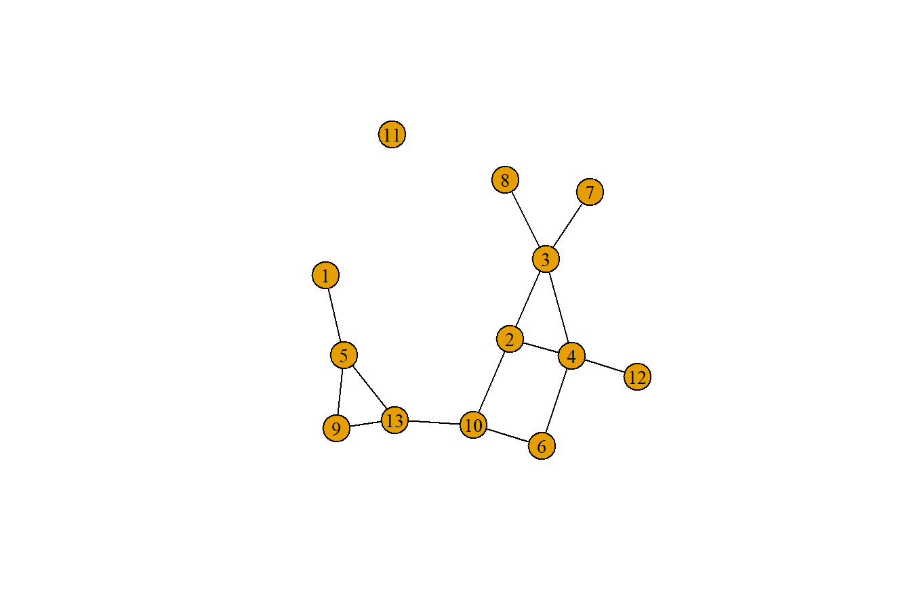
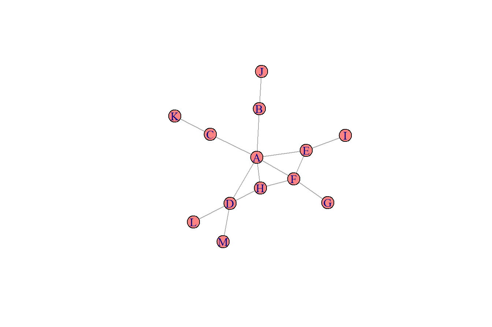
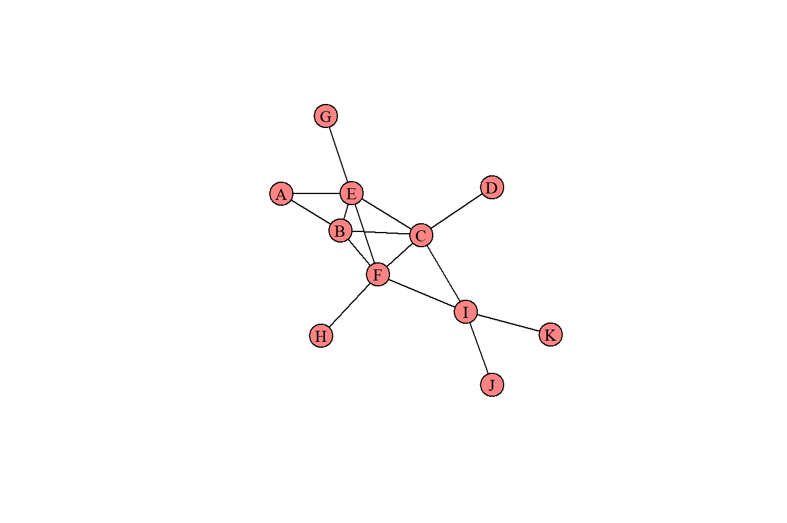

library(igraph)
g <- graph_from_literal(A--B--J,
A--C--K,
A--D,
A--H,
D--H,
D--M,
D--L,
F--H,
A--F--G,
F--E--I,
A--E)
V(g)$color <- "#FE8484"
plot(g,
vertex.label.color = "black",
vertex.label.cex = .9,
edge.color = 'black',
vertex.size = 18,
layout = layout_nicely(g))4 A hálózat szerkezete
Ebben a fejezetben a közösségi hálózatok szerkezetének és alstruktúrájának leírására teszünk kísérletet.
4.1 A fejezet fogalmai
- Sajátvektor centralitás
-
azt méri, hogy egy csúcs mennyire jól kapcsolódik a többi csúcshoz.
- Hálózat sűrűsége
-
a csúcsok között ténylegesen létező és potenciálisan lehetséges kapcsolatok aránya.
- Átlagos úthossz
-
a hálózat összes csúcspárja közötti legrövidebb utak hosszának átlaga.
4.2 A hálózat összekapcsoltsága
4.2.1 Sajátvektor centralitás
A fejezetben használt függvények:
eigen_centrality()- Sajátvektor-centralitásedge_density()- hálózat sűrűsége
Ebben az alfejezetben a hálózat megismeréséhez először azonosítjuk a kulcscsúcsokat az ún. sajátvektor centralitás segítségével, majd ábrázoljuk a hálózatot.
A sajátvektor centralitás azt méri, hogy egy csúcs mennyire jól kapcsolódik a többi csúcshoz. A legmagasabb sajátvektor centralitású csúcsok azok, amelyek sok másik csúcshoz kapcsolódnak, de különösen olyan csúcsokhoz, amelyek maguk is erősen kapcsolódnak másokhoz.
Hozzunk létre egy irányítatlan gráfot:
Az {igraph} csomagban a sajátvektor-centralitás kiszámításához az eigen_centrality() függvényt használjuk.
eigen_centrality(g)
#> $vector
#> A B J C K ...
#> 1.00000000 0.32952405 0.09882059 0.32952405 0.09882059 0.6269...
#> H M L F G ...
#> 0.71449055 0.18800581 0.18800581 0.75559956 0.22659589 0.5785...
#> I
#> 0.17348938
#>
#> $value
#> [1] 3.334569
#>
#> $options
#> $options$bmat
#> [1] "I"
#>
#> $options$n
#> [1] 13
#>
#> $options$which
#> [1] "LA"
#>
#> $options$nev
#> [1] 1
#>
#> $options$tol
#> [1] 0
#>
#> $options$ncv
#> [1] 0
#>
#> $options$ldv
#> [1] 0
#>
#> $options$ishift
#> [1] 1
#>
#> $options$maxiter
#> [1] 3000
#>
#> $options$nb
#> [1] 1
#>
#> $options$mode
#> [1] 1
#>
#> $options$start
#> [1] 1
#>
#> $options$sigma
#> [1] 0
#>
#> $options$sigmai
#> [1] 0
#>
#> $options$info
#> [1] 0
#>
#> $options$iter
#> [1] 8
#>
#> $options$nconv
#> [1] 1
#>
#> $options$numop
#> [1] 27
#>
#> $options$numopb
#> [1] 0
#>
#> $options$numreo
#> [1] 15A visszaadott objektum egy sokelemű lista, de az egyes csúcsokhoz tartozó tényleges centralitási pontszámok a vector nevű elemben találhatók. Amint ebben a példában látható, az irányítatlan hálózat, az “A”, “D”, “E”, “F” és “H” csúcsok különösen magasak a sajátvektor-centralitásban.
Korábban megismerkedtünk más csúcs-fontossági mutatókkal is (például a fokszám, a közöttiség, és közelségi centralitás), ésmár is ismerjük sajátvektor centralitást is. Létezik azonban egy olyan mutatócsalás is, amely elárul valamit a hálózatok általános mintájáról vagy szerkezetéről. A hálózat általános szerkezetének legegyszerűbb mértéke a hálózat sűrűsége. Ez megegyezik azoknak az éleknek az arányával, amelyek valóban léteznek egy hálózatban, azokhoz az élekhez képest, amelyek potenciálisan létezhetnének minden csúcspár között.
vcount(g) # csúcsok száma
#> [1] 13
ecount(g) # élek száma
#> [1] 15edge_density(g)
#> [1] 0.1923077A 13 csúcsból álló hálózatokban potenciálisan 78 él lehet, ha minden csúcs össze van kötve minden csúccsal. A fenti hálózatban 15 él van, így a sűrűség 0,19, ami a potenciális élek 19%-ának felel meg.
A lenti hálózatnak már 30 éle van, ami 0,38 sűrűségű, vagyis az összes létező potenciális kapcsolat 38%-a. A sűrűség tehát annak mértéke, hogy egy hálózat mennyire össze van kötve.
Láthatjuk, az edge_density() függvényt hívtuk segítségül.
library(igraph)
g2 <- graph_from_literal(A--B--J,
A--C--K,
A--D,
A--H,
D--H,
D--M,
D--L,
F--H,
A--F--G,
F--E--I,
A--E,
G--I, E--G, F--L, H--L, M--C,
K--D, K--J, J--C, J--G, B--C,
B--D, A--M, H--L, F--L, E--H,
E--B, K--M )
V(g2)$color <- "#FE8484"
plot(g2,
vertex.label.color = "black",
vertex.label.cex = .9,
edge.color = 'black',
vertex.size = 18,
layout = layout_nicely(g2))vcount(g2) # csúcsok száma
#> [1] 13
ecount(g2) # élek száma
#> [1] 30edge_density(g2)
#> [1] 0.38461544.2.2 Átlagos úthossz
A hálózat összekapcsolhatóságának másik mértéke az átlagos úthossz. Ezt úgy számítjuk ki, hogy meghatározzuk a hálózat összes csúcspárja közötti legrövidebb utak hosszának átlagát. Az {igraph}-ban ezt úgy számítjuk ki, hogy a mean_distance() függvényt alkalmazzuk a gráfra, és azt is specifikáljuk, hogy a gráf irányítatlan-e vagy irányított.
mean_distance(g)
#> [1] 2.474359
mean_distance(g2)
#> [1] 1.769231A bal oldali hálózat átlagos úthossza 2,47, míg a jobb oldali hálózat átlagos úthossza 1,77. Ennek az az oka, hogy a csúcsok közötti átlagos legrövidebb út csökken. Például a bal oldali G és K között a legrövidebb út négy lépésből áll: G-F-A-C-K. A jobb oldalon két lépés található: G-J-K. Ez arra utal, hogy a jobb oldali hálózat jobban össze van kapcsolva, és ez jelentősen megkönnyíti a csúcsok közötti barangolást.
4.2.3 Feladat
Forrest Gump hálózat
Ebben a példában a Forrest Gump című filmen alapuló közösségi hálózatot fogjuk használni. A hálózat csúcsai a film sreplői, a hálózat minden éle pedig azt jelzi, hogy a két karakter együtt szerepelt a film legalább egy jelenetében. Ez a hálózat irányítatlan.
A hálózat megismeréséhez először létre kell hoznia a hálózati objektumot a nyers adatkészletből. Ezután azonosítja a kulcscsúcsokat egy sajátvektor-centralitásnak nevezett mértékkel. A magas sajátvektor-centralitású egyének azok, akik szorosan kapcsolódnak más, erősen kapcsolódó egyénekhez. Ezután feltáró vizualizációt készít a hálózatról. A Forrest Gump hálózati adatkészlettel fog dolgozni. A Forrest Gump hálózat minden éle azt jelzi, hogy a film ezen két karaktere együtt szerepelt a film legalább egy jelenetében. Világos, a hálózatunk irányítatlan.
Olvassuk be a forrest_gump.csv vesszővel tagolt szöveges állományt és vizsgáljuk meg az adattábla első néhány sorát a head() segítségével.
d <- rio::import(file = "adat/forrest_gump.csv")
head(d)
#> V1 V2
#> 1 ABBIE HOFFMAN JENNY
#> 2 ABBIE HOFFMAN POLICEMAN
#> 3 ANCHORMAN FORREST
#> 4 ANCHORMAN LT DAN
#> 5 ANCHORMAN MARGO
#> 6 ANCHORMAN MRS GUMPHozzunk létre egy irányítatlan hálózatot a graph_from_data_frame() használatával.
library(igraph)
g_forrest <- graph_from_data_frame(d, directed = FALSE)Azonosítsuk a kulcscsúcsokat az eigen_centrality() függvény segítségével, és ennek eredményeit rendeljük hozzá a g_forrest_ec objektumhoz. Ezután határozzuk meg, hogy melyik szereplő rendelkezik a legmagasabb sajátvektor centralitással. A centralitási pontszámok értékeit a g_forrest_ec$vector tárolja.
# sajátvektor centralitás kiszámítása
g_forrest_ec <- eigen_centrality(g_forrest)# a három legnagyobb sajátvektor centralitássú csúcs
g_forrest_ec$vector[order(g_forrest_ec$vector, decreasing = T)][1:3]
#> FORREST JENNY LT DAN
#> 1.0000000 0.6482939 0.3388870Készítsünk egy diagramot a Forrest Gump hálózatról a plot() segítségével. Állítsuk be a csúcsok méretét a g_forrest_ec$vector tárolt sajátvektor centralitásértékek 25-szörösére.
# a hálózat kívánt megjelenítése
plot(g_forrest,
vertex.label.color = "black",
vertex.label.cex = 0.6,
vertex.size = 25*(g_forrest_ec$vector),
edge.color = 'gray88',
main = "Forrest Gump Hálózat"
)Hálózati sűrűség és átlagos úthossz
Az első hálózat szintű mérőszám, amelyet megvizsgálunk a gráf sűrűsége lesz. Ez lényegében a hálózatban ténylegesen létező élek és a csúcsok közötti potenciális élek aránya. Ez azt jelzi, hogy a gráf csúcsai milyen jól kapcsolódnak egymáshoz.
A hálózat összekapcsoltságának másik mértéke az átlagos úthossz. Ezt úgy számítjuk ki, hogy meghatározzuk a hálózat összes csúcspárja közötti legrövidebb utak hosszának átlagát. A csúcspárok közötti leghosszabb úthosszt a hálózati gráf átmérőjének nevezzük. Számoljuk ki a az eredeti gráf átmérőjét és átlagos úthosszát is.
Az edge_density() függvény segítségével számítsuk ki a gráf sűrűségét, és rendeljük hozzá ezt az értéket a gd vektorhoz.
# a hálózat sűrűsége
gd <- edge_density(g_forrest)
gd
#> [1] 0.06199954A diameter() segítségével számítsuk ki az eredeti gráf átmérőjét.
# a gráf átmérője
diameter(g_forrest, directed = FALSE)
#> [1] 4Rendelje a gráf átlagos úthosszát a g.apl objektumhoz a mean_distance() függvénnyel.
# az átlagos úthossz a gráfban
g.apl <- mean_distance(g_forrest, directed = FALSE)
g.apl
#> [1] 1.9949674.3 Véletlen gráfok
Bár egyszerű kiszámítani a hálózati mérőszámokat, például az átlagos úthosszat, nem mindig világos, hogy ezek az értékek mennyire magasak vagy alacsonyak. A hálózatkutatók gyakran véletlenszerű hálózati gráf technikákat alkalmaznak, hogy ezeknek a mérőszámoknak jelentést adjanak.
A véletlen gráf egy olyan hálózat, amelyet véletlenszerűen generálunk (egy algoritmus segítségével), miközben figyelünk arra, hogy a generált gráf az eredeti hálózathoz hasonló jellemzőkkel rendelkezzen. Például a legegyszerűbb véletlenszerű gráf, amelyet létrehozhat, az lenne, amelyiknek ugyanannyi csúcsa van, mint az eredeti gráfnak, és megközelítőleg ugyanolyan sűrűsége van, mint az eredeti gráfnak.
Tegyük fel, hogy a lenti hálózat az eredeti hálózat.
plot(g,
vertex.label.color = "black",
vertex.label.cex = .9,
edge.color = 'black',
vertex.size = 18,
layout = layout_nicely(g))A lenti hálózat egy véletlenszerű gráf, amelyet az algoritmus állít elő. Mindkettőnek ugyanannyi csúcsa van, és megközelítőleg azonos a sűrűsége. Egy ilyen véletlenszerű hálózat létrehozásához az {igraph} csomag az erdos-dot-renyi-dot-game() függvényt. Az első argumentum a hálózat csúcsainak száma - ehhez használhatod a gorder()-t. A grafikon sűrűségét a második p-pont-vagy-pont-m argumentummal kell használni. A típust ‘gnp’-re kell állítani.
# véletlen gráf generálása
g_random <- erdos.renyi.game(n = vcount(g), p.or.m = edge_density(g), type="gnp")
plot(g_random,
vertex.label.color = "black",
vertex.label.cex = .9,
edge.color = 'black',
vertex.size = 18,
layout = layout_nicely(g_random))
4.3.1 Véletlenszerű gráfok és randomizációs tesztek
Ha többször futtatjuk a véletlenszerű gráfot létrehozó algoritmust, akkor észre fogjuk venni, hogy minden alkalommal más gráfot hoz létre. Ez különösen akkor hasznos, ha meg akarjuk állapítani, hogy az eredeti hálózat valamely tulajdonsága – például az átlagos útvonalhossz – különösen szokatlan vagy figyelemre méltó-e.
A randomizációs teszttel kiszámolhatjuk az átlagos útvonalhosszat mondjuk 1000 olyan véletlenszerű hálózatra, amelyek az eredeti hálózaton alapulnak. Ezután megvizsgálhatjuk, hogy a megfigyelt eredeti értéke jelentősen eltérnek-e a véletlenszerű hálózatokon keresztül előállított értékektől. Ez a hálózati randomizációs tesztek alapelve.
Összefoglalva a randomizációs teszt lépései (például átlagos úthosszra
- Hozzunk létre 1000 véletlen gráfot, amely paramétereiben megegyezik az eredeti gráffal (például a csúcsok számában és a hálózat sűrűségében)
- Számoljuk ki az eredeti gráf átlagos úthosszát
- Számoljuk ki az átlagos átlagos úthosszt az 1000 generált gráfra
- Határozzuk meg azoknak a véletlen gráfoknak a számát, amelyek az eredeti gráf átlagos úthosszánál kisebb és nagyobb átlagos úthosszal rendelkeznek
A lenti kód létrehoz 1000 db véletlen gráfot. Az 1000 hálózatot a gl listaobjektum tárolja.
# 1000 elemű lista, melynek elemei NULL-ok (egyelőre üresek)
gl <- vector('list', 1000)
# az 1000 véletlen gráf létrehozása
for (i in 1:1000) {
gl[[i]] <- erdos.renyi.game(n = vcount(g),
p.or.m = edge_density(g),
type="gnp")
}A gl listában szereplő egyes véletlenszerű hálózatok átlagos útvonalhosszának kiszámításához az sapply() segítségével alkalmazzuk a mean_distance() függvényt a lista minden hálózatára. Itt ezek az értékek a gl_apls objektumként kerülnek tárolásra.
# eltároljuk az 1000 db átlagos úthosszt
gl_apls <- sapply(gl, mean_distance, directed = FALSE)A fentiek birtokában már elvégezhetjük a szükséges összehasonlítást:
# hány véletlen gráfnak nagyobb az átlagos úthossza az eredeti gráfhoz képest?
table(mean_distance(g)<gl_apls)
#>
#> FALSE TRUE
#> 669 331Az eredeti hálózat és a véletlenszerű hálózatok átlagos útvonalhosszának összehasonlítása történhet az adatok ábrázolásával is. A hist() segítségével megismerhetjük a véletlen hálózatok átlagos úthosszainak eloszlását. Ha hozzáadunk egy piros pontozott vonalat az abline() függvénnyel, amely az eredeti hálózat átlagos úthossz-értékénél metszi az x-tengelyt, akkor közvetlen összehasonlítást végezhetünk.
hist(gl_apls)
abline(v=mean_distance(g), col="red", lty=3, lwd=2)Itt is jól látható, hogy az eredeti hálózatban megfigyelt átlagos úthossz elfogadható mértékben jellemzőnek mondható egy ilyen méretű és sűrűségű véletlen hálózatra is.
4.3.2 Feladat
A véletlen gráfok generálása fontos módszer annak vizsgálatára, hogy az eredeti gráf bizonyos tulajdonságai mellett mennyire valószínű vagy valószínűtlen más hálózati metrikák előfordulása. A legegyszerűbb véletlen gráf az, amelyiknek ugyanannyi csúcsa van, mint az eredeti gráfnak, és megközelítőleg ugyanolyan sűrűsége van, mint az eredeti gráfnak. Vizsgáljuk meg ezt a kérdést az eredeti Forrest Gump hálózaton keresztül.
Hozzunk létre egy Véletlen gráfot az erdos.renyi.game() függvény segítségével. Az első argumentum (n=) a gráf csomópontjainak számát jelenti, amely a vcount() segítségével számítható ki. A második argumentum (p.or.m=) pedig a gráf sűrűsége, az utolsó argumentum (type='gnp') pedig azt jelzi, hogy a hálózat sűrűségét használjuk egy véletlenszerű gráf létrehozásához. Az új gráfot g_random objektumban tároljuk el.
# véletlen gráf létrehozása
g_random <- erdos.renyi.game(n = vcount(g_forrest), p.or.m = edge_density(g_forrest), type = "gnp")
# információk a véletlen gráfról
g_random
#> IGRAPH 00d156a U--- 94 290 -- Erdos-Renyi (gnp) graph
#> + attr: name (g/c), type (g/c), loops (g/l), p (g/n)
#> + edges from 00d156a:
#> [1] 4-- 5 1-- 7 2--12 1--15 3--16 10--16 11--16 5--18 ...
#> [10] 19--22 21--25 24--27 10--28 14--28 25--28 15--29 16--29 ...
#> [19] 26--30 6--31 20--31 21--33 16--34 22--34 33--34 9--35 ...
#> [28] 18--35 33--35 14--36 16--36 35--37 10--39 22--39 3--40 ...
#> [37] 9--41 16--42 20--42 28--42 37--42 5--43 13--43 28--43 ...
#> [46] 2--44 11--45 35--45 36--45 33--46 34--46 37--47 9--48 ...
#> [55] 13--49 13--50 22--50 24--50 26--50 28--50 30--50 18--51 ...
#> [64] 46--51 49--51 3--52 4--52 36--52 45--52 7--54 11--54 ...
#> + ... omitted several edges# a véletlen gráf megjelenítése
plot(g_random)
Számoljuk ki a véletlen hálózat sűrűségét. Többször elvégezve a generálást ez az érték kissé változhat, de megközelítőleg megegyezik az erdeti gráf sűrűségével.
# a véletlen gráf sűrűsége`
edge_density(g_random)
#> [1] 0.06634637Számítsuk ki a véletlen gráf átlagos úthosszát is.
# a véletlen gráf átlagos úthossza
mean_distance(g_random, directed = FALSE)
#> [1] 2.672615# az eredeti gáf átlagos úthossza
mean_distance(g_forrest, directed = FALSE)
#> [1] 1.994967Látható, hogy a Forrest Gump hálózat átlagos úthossza kisebb, mint a véletlen hálózat átlagos úthossza. Ha néhányszor lefuttattjuk a kódot, akkor észrevetjük, hogy a Forrest Gump hálózatban szinte mindig alacsonyabb értéket kapunk. Ez azt sugallja, hogy a Forrest Gump hálózat jobban össze van kapcsolva, mint a véletlen hálózatok, annak ellenére, hogy a véletlen hálózatoknak ugyanannyi csúcsuk van, és megközelítőleg azonos sűrűséggel rendelkeznek.
Generáljunk 1000 véletlenszerű gráfot az eredeti gráfból.
# 1000 elemű lista
gl_forrest <- vector('list',1000)
for(i in 1:1000){
gl_forrest[[i]] <- erdos.renyi.game(n = vcount(g_forrest), p.or.m = edge_density(g_forrest), type = "gnp")
}Számítsuk ki az 1000 véletlen gráf átlagos úthosszát az sapply() segítségével. Hozzunk létre egy új gl_apls vektort.
# 1000 véletlen gráfra az átlagos úthossz megállapítása
gl_apls <- sapply(gl_forrest, mean_distance, directed = FALSE)Ábrázoljuk az 1000 véletlen gráf átlagos úthosszának hisztogramját a hist() segítségével. Adjunk hozzá egy piros szaggatott függőleges vonalat is, amelynek az x metszéspontja az eredeti gráf átlagos úthosszának felel meg.
hist(gl_apls, xlim = range(c(1.5, 6)))
abline(v = mean_distance(g_forrest), col = "red", lty = 3, lwd = 2)Számítsuk ki, hogy a véletlen gráfok átlagos úthosszának értékei hány esetben kisebbek az eredeti gráf átlagos úthosszánál. Ez lényegében annak a valószínűsége, hogy véletlenül ilyen úthosszt kapunk..
# annak az aránya, hogy a véletlen gráfok átlagos úthossza kisebb, mint az eredeti gráf átlagos úthossza
mean(gl_apls < mean_distance(g_forrest))
#> [1] 0Láthatjuk, a Forrest Gump hálózat sokkal jobban össze van kapcsolva, mint azt véletlenül várnánk, mivel nulla annak az esélya, hogy a véletlenszerű hálózat átlagos úthossza kisebb, mint a Forrest Gump hálózat átlagos úthossza.
4.4 Hálózati alstruktúrák
Az előző részben a hálózat szerkezetének néhány általános jellemzőjére figyeltünk, mint például a sűrűség és az átlagos úthossz. A következő részben a közösségi hálózatok mikrostrukturális jellemzőit tárgyaljuk, amelyek fontos szerepet játszhatnak a hálózat működését illetően.
4.4.1 Tranzitivitás
A helyi kapcsolat fontos mércéje a hálózatban létező háromszögek (más néven triádok) vizsgálata. Egy hálózatban minden három csúcsból álló csoporthoz három potenciális él tartozik. Ha minden él létezik, akkor a triádot zártnak mondjuk.
plot(g)
A fenti hálózatot nézve három zárt háromszöget azonosíthatunk. Az A-E-F, A-F-H és A-D-H háromszögek zártak, mindhárom élükkel. Néhány háromszögnek két éle van, például az E-F-G, vagy az A-B-C. Néhány háromszögnek csak egy éle van, ilyen a C-K-M, vagy G-E-I. Néhány háromszögnek nincs éle, például a H-L-M. Az {igraph} csomagban a hálózat összes zárt háromszöge megtalálható a triangles() függvény segítségével.
triangles(g)
#> + 9/13 vertices, named, from ffcc945:
#> [1] A D H A F E A F H4.4.2 Globális tranzitivitás
Egy hálózat tranzitivitásának kiszámításával formálisan felmérhetjük, hogy egy három csúcsból álló csoport mennyire kapcsolódik egymáshoz. A tranzitivitás azt méri, hogy egy adott csúcs szomszédos csúcsai milyen valószínűséggel kapcsolódnak össze. Az {igraph} csomagban a transitivity() függvény segítségével számítható ki.
transitivity(g, type = "global")
#> [1] 0.25714294.4.3 Helyi tranzitivitás
Megszámolhatjuk az egyes csúcsokhoz tartozó zárt háromszögek számát a count_triangles() segítségével. Ez a függvény a gráf objektumot, majd a csúcsazonosítók vektorát tartalmazza.
count_triangles(g, vids = c('A', 'F'))
#> [1] 3 2Lehetőség van az egyes csúcsok helyi szintű tranzitivitásának meghatározására is. Ez a mérőszám kiszámítja a ténylegesen létező zárt háromszögek arányát (amelyeknek a csúcs része) az elméleti zárt háromszögek számához képest (amelynek a csúcs szintén a része).
A helyi tranzitivitás kiszámítható a transitivity() használatával. A type='local' argumentumot is használjuk.
# lokális tranzitivitás kiszámítása
transitivity(g, type = "local", vids = c('A', 'F'))
#> A F
#> 0.2000000 0.3333333A példában látható, hogy az ‘F’ lokális tranzitivitása valamivel nagyobb, mint az ‘A’-é. Ennek az az oka, hogy ‘F’ kapcsolatainak nagyobb hányada vezet zárt háromszögekbe, mint az ‘A’ kapcsolataié.
4.4.4 Klikkek
A klikkek azonosítása egy másik gyakran használt módszer a hálózati alstruktúra értékelése során. Egy klikkben minden csúcs minden másik csúcshoz kapcsolódik. A gyakorlatban nagyon ritka, hogy egy teljes hálózat egy klikket alkosson (vagyis teljes gráf legyen). A hálózatokon belül azonban annál gyakrabban léteznek klikkek, mint például a lenti példában.
g3 <- graph_from_literal(A--E--G,
A--B--E--F--I--K,
F--H,
I--J,
A--B--C--I,
C--D,
E--C,
B--F,
E--C,
C--F)
V(g3)$color <- "#FE8484"
plot(g3,
vertex.label.color = "black",
vertex.label.cex = .9,
edge.color = 'black',
vertex.size = 18)
Ebben a hálózatban a létező legnagyobb klikknek négy csúcsa van - B, C, E és F. Ez a négy csúcs mind összekapcsolódik egymással. Egy másik megközelítés az, hogy az általuk alkotott összes háromszög zárt.
4.4.5 A klikkek azonosítása
A hálózat legnagyobb klikkje azonosítható az {igraph} csomagban a largest_cliques() függvény segítségével. A függvény Visszaadja, hogy hány csúcs van az adott klikkben, és ezeknek a csúcsoknak az azonosítóit is listázza.
# a hálózat legnagyobb klikkje
largest_cliques(g3)
#> [[1]]
#> + 4/11 vertices, named, from 019dfb2:
#> [1] F E C BA max_cliques() függvény segítségével a kettőtől a legnagyobb klikkméretig bármilyen méretű klikk azonosítható. Ez a függvény az egyes méretű klikkek listáját adja vissza. A példahálózatban látható, hogy két 3-as méretű klikk létezik: az A, B, E és I, C, F. Bennük minden csúcs összekapcsolódik, és nem részei egy nagyobb klikknek.
# az összes klikk
max_cliques(g3)
#> [[1]]
#> + 2/11 vertices, named, from 019dfb2:
#> [1] D C
#>
#> [[2]]
#> + 2/11 vertices, named, from 019dfb2:
#> [1] K I
#>
#> [[3]]
#> + 2/11 vertices, named, from 019dfb2:
#> [1] G E
#>
#> [[4]]
#> + 2/11 vertices, named, from 019dfb2:
#> [1] J I
#>
#> [[5]]
#> + 2/11 vertices, named, from 019dfb2:
#> [1] H F
#>
#> [[6]]
#> + 3/11 vertices, named, from 019dfb2:
#> [1] I F C
#>
#> [[7]]
#> + 3/11 vertices, named, from 019dfb2:
#> [1] A E B
#>
#> [[8]]
#> + 4/11 vertices, named, from 019dfb2:
#> [1] F E C B4.4.6 Feladat
Háromszögek és tranzitivitás
A helyi kapcsolódások másik fontos mértéke a hálózati gráfokban a háromszögek (más néven triádok) vizsgálata. Ebben a feladatban a cél az összes olyan zárt háromszög megtalálása, amely egy hálózatban létezik. A zárt háromszög azt jelenti, hogy a három megadott csúcs között minden él létezik.
Ezután kiszámíthatjuk a hálózat tranzitivitását. Ez megegyezik a hálózat összes lehetséges zárt háromszögének arányával. Újra megkíséreljük azon zárt háromszögek számát megtalálni, amelyeknek egy adott csúcs része.
Keressük meg a Forrest Gump hálózat összes lehetséges háromszögének mátrixát a triangles() függvény segítségével.
# minden háromszög megmutatása a hálózaton belül
options(max.print=999999)
matrix(triangles(g_forrest), nrow = 3)
#> [,1] [,2] [,3] [,4] [,5] [,6] [,7] [,8] [,9] [,10] [,11]
#> [1,] 36 36 36 36 36 36 36 36 36 36 36
#> [2,] 1 1 1 1 2 4 4 6 6 6 6
#> [3,] 83 38 39 66 68 57 24 27 75 40 45
#> [,12] [,13] [,14] [,15] [,16] [,17] [,18] [,19] [,20] [,21]
#> [1,] 36 36 36 36 36 36 36 36 36 36
#> [2,] 7 7 8 11 11 11 12 12 13 14
#> [3,] 8 69 69 12 13 70 70 13 70 4
#> [,22] [,23] [,24] [,25] [,26] [,27] [,28] [,29] [,30] [,31]
#> [1,] 36 36 36 36 36 36 36 36 36 36
#> [2,] 14 14 14 14 14 14 14 14 15 15
#> [3,] 19 24 71 65 57 62 63 64 21 72
#> [,32] [,33] [,34] [,35] [,36] [,37] [,38] [,39] [,40] [,41]
#> [1,] 36 36 36 36 36 36 36 36 36 36
#> [2,] 17 17 18 18 19 19 21 22 24 26
#> [3,] 22 42 5 28 71 63 72 42 57 73
#> [,42] [,43] [,44] [,45] [,46] [,47] [,48] [,49] [,50] [,51]
#> [1,] 36 36 36 36 36 36 36 36 36 36
#> [2,] 26 26 26 26 26 27 27 27 28 28
#> [3,] 52 47 48 49 50 75 45 40 5 90
#> [,52] [,53] [,54] [,55] [,56] [,57] [,58] [,59] [,60] [,61]
#> [1,] 36 36 36 36 36 36 36 36 36 36
#> [2,] 30 30 30 34 38 38 38 39 39 40
#> [3,] 84 61 51 88 83 66 39 83 66 75
#> [,62] [,63] [,64] [,65] [,66] [,67] [,68] [,69] [,70] [,71]
#> [1,] 36 36 36 36 36 36 36 36 36 36
#> [2,] 40 41 41 41 41 41 41 41 41 41
#> [3,] 45 1 3 6 7 8 11 12 13 26
#> [,72] [,73] [,74] [,75] [,76] [,77] [,78] [,79] [,80] [,81]
#> [1,] 36 36 36 36 36 36 36 36 36 36
#> [2,] 41 41 41 41 41 41 41 41 41 41
#> [3,] 27 30 32 33 86 37 38 39 40 43
#> [,82] [,83] [,84] [,85] [,86] [,87] [,88] [,89] [,90] [,91]
#> [1,] 36 36 36 36 36 36 36 36 36 36
#> [2,] 41 41 41 41 41 41 41 41 41 41
#> [3,] 44 45 47 48 49 50 51 52 53 54
#> [,92] [,93] [,94] [,95] [,96] [,97] [,98] [,99] [,100] [...
#> [1,] 36 36 36 36 36 36 36 36 36 ...
#> [2,] 41 41 41 41 41 41 41 41 41 ...
#> [3,] 56 58 61 66 69 70 73 74 75 ...
#> [,102] [,103] [,104] [,105] [,106] [,107] [,108] [,109]
#> [1,] 36 36 36 36 36 36 36 36
#> [2,] 41 41 41 43 43 43 44 44
#> [3,] 82 83 84 82 54 53 2 3
#> [,110] [,111] [,112] [,113] [,114] [,115] [,116] [,117]
#> [1,] 36 36 36 36 36 36 36 36
#> [2,] 44 44 44 44 44 44 44 44
#> [3,] 9 14 17 19 22 82 71 42
#> [,118] [,119] [,120] [,121] [,122] [,123] [,124] [,125]
#> [1,] 36 36 36 36 36 36 36 36
#> [2,] 44 44 44 44 44 44 45 47
#> [3,] 43 53 62 63 64 65 75 73
#> [,126] [,127] [,128] [,129] [,130] [,131] [,132] [,133]
#> [1,] 36 36 36 36 36 36 36 36
#> [2,] 47 47 47 47 48 48 48 48
#> [3,] 52 50 48 49 73 52 50 49
#> [,134] [,135] [,136] [,137] [,138] [,139] [,140] [,141]
#> [1,] 36 36 36 36 36 36 36 36
#> [2,] 49 49 49 50 50 51 51 52
#> [3,] 73 52 50 73 52 84 61 73
#> [,142] [,143] [,144] [,145] [,146] [,147] [,148] [,149]
#> [1,] 36 36 36 36 36 36 36 36
#> [2,] 53 54 54 56 58 59 60 60
#> [3,] 82 87 56 89 79 92 2 20
#> [,150] [,151] [,152] [,153] [,154] [,155] [,156] [,157]
#> [1,] 36 36 36 36 36 36 36 36
#> [2,] 60 60 60 60 60 61 62 62
#> [3,] 23 25 31 81 43 84 71 19
#> [,158] [,159] [,160] [,161] [,162] [,163] [,164] [,165]
#> [1,] 36 36 36 36 36 36 36 36
#> [2,] 62 62 63 64 64 64 64 64
#> [3,] 35 63 71 3 71 19 63 62
#> [,166] [,167] [,168] [,169] [,170] [,171] [,172] [,173]
#> [1,] 36 36 36 36 36 36 36 36
#> [2,] 64 65 65 65 65 65 65 65
#> [3,] 46 4 71 19 24 64 63 57
#> [,174] [,175] [,176] [,177] [,178] [,179] [,180] [,181]
#> [1,] 36 36 41 41 41 41 41 41
#> [2,] 65 66 1 1 1 1 6 6
#> [3,] 62 83 83 38 39 66 27 75
#> [,182] [,183] [,184] [,185] [,186] [,187] [,188] [,189]
#> [1,] 41 41 41 41 41 41 41 41
#> [2,] 6 6 7 7 8 11 11 11
#> [3,] 40 45 8 69 69 12 13 70
#> [,190] [,191] [,192] [,193] [,194] [,195] [,196] [,197]
#> [1,] 41 41 41 41 41 41 41 41
#> [2,] 12 12 13 26 26 26 26 26
#> [3,] 70 13 70 73 52 47 48 49
#> [,198] [,199] [,200] [,201] [,202] [,203] [,204] [,205]
#> [1,] 41 41 41 41 41 41 41 41
#> [2,] 26 27 27 27 30 30 30 38
#> [3,] 50 75 45 40 84 61 51 83
#> [,206] [,207] [,208] [,209] [,210] [,211] [,212] [,213]
#> [1,] 41 41 41 41 41 41 41 41
#> [2,] 38 38 39 39 40 40 43 43
#> [3,] 66 39 83 66 75 45 82 54
#> [,214] [,215] [,216] [,217] [,218] [,219] [,220] [,221]
#> [1,] 41 41 41 41 41 41 41 41
#> [2,] 43 44 44 44 44 45 47 47
#> [3,] 53 3 82 43 53 75 73 52
#> [,222] [,223] [,224] [,225] [,226] [,227] [,228] [,229]
#> [1,] 41 41 41 41 41 41 41 41
#> [2,] 47 47 47 48 48 48 48 49
#> [3,] 50 48 49 73 52 50 49 73
#> [,230] [,231] [,232] [,233] [,234] [,235] [,236] [,237]
#> [1,] 41 41 41 41 41 41 41 41
#> [2,] 49 49 50 50 51 51 52 53
#> [3,] 52 50 73 52 84 61 73 82
#> [,238] [,239] [,240] [,241] [,242] [,243] [,244] [,245]
#> [1,] 41 41 41 41 41 44 44 44
#> [2,] 54 58 58 61 66 2 14 14
#> [3,] 56 10 79 84 83 67 19 71
#> [,246] [,247] [,248] [,249] [,250] [,251] [,252] [,253]
#> [1,] 44 44 44 44 44 44 44 44
#> [2,] 14 14 14 14 17 17 19 19
#> [3,] 65 62 63 64 22 42 71 63
#> [,254] [,255] [,256] [,257] [,258] [,259] [,260] [,261]
#> [1,] 44 44 44 44 44 44 44 44
#> [2,] 22 43 43 53 62 62 62 63
#> [3,] 42 82 53 82 71 19 63 71
#> [,262] [,263] [,264] [,265] [,266] [,267] [,268] [,269]
#> [1,] 44 44 44 44 44 44 44 44
#> [2,] 64 64 64 64 64 65 65 65
#> [3,] 3 71 19 63 62 71 19 64
#> [,270] [,271] [,272] [,273] [,274] [,275] [,276] [,277]
#> [1,] 44 44 14 14 14 14 14 14
#> [2,] 65 65 4 4 19 19 24 65
#> [3,] 63 62 57 24 71 63 57 4
#> [,278] [,279] [,280] [,281] [,282] [,283] [,284] [,285]
#> [1,] 14 14 14 14 14 14 14 14
#> [2,] 65 65 65 65 65 65 65 62
#> [3,] 71 19 24 64 63 57 62 71
#> [,286] [,287] [,288] [,289] [,290] [,291] [,292] [,293]
#> [1,] 14 14 14 14 14 14 14 65
#> [2,] 62 62 63 64 64 64 64 4
#> [3,] 19 63 71 71 19 63 62 57
#> [,294] [,295] [,296] [,297] [,298] [,299] [,300] [,301]
#> [1,] 65 65 65 65 65 65 65 65
#> [2,] 4 19 19 24 64 64 64 64
#> [3,] 24 71 63 57 71 19 63 62
#> [,302] [,303] [,304] [,305] [,306] [,307] [,308] [,309]
#> [1,] 65 65 65 65 64 64 64 64
#> [2,] 63 62 62 62 19 19 63 62
#> [3,] 71 71 19 63 71 63 71 71
#> [,310] [,311] [,312] [,313] [,314] [,315] [,316] [,317]
#> [1,] 64 64 62 62 62 19 26 26
#> [2,] 62 62 19 19 63 63 52 47
#> [3,] 19 63 71 63 71 71 73 73
#> [,318] [,319] [,320] [,321] [,322] [,323] [,324] [,325]
#> [1,] 26 26 26 26 26 26 26 26
#> [2,] 47 47 47 47 48 48 48 48
#> [3,] 52 50 48 49 73 52 50 49
#> [,326] [,327] [,328] [,329] [,330] [,331] [,332] [,333]
#> [1,] 26 26 26 26 26 47 47 47
#> [2,] 49 49 49 50 50 52 50 50
#> [3,] 73 52 50 73 52 73 73 52
#> [,334] [,335] [,336] [,337] [,338] [,339] [,340] [,341]
#> [1,] 47 47 47 47 47 47 47 48
#> [2,] 48 48 48 48 49 49 49 52
#> [3,] 73 52 50 49 73 52 50 73
#> [,342] [,343] [,344] [,345] [,346] [,347] [,348] [,349]
#> [1,] 48 48 48 48 48 49 49 49
#> [2,] 50 50 49 49 49 52 50 50
#> [3,] 73 52 73 52 50 73 73 52
#> [,350] [,351] [,352] [,353] [,354] [,355] [,356] [,357]
#> [1,] 50 43 1 1 1 1 1 1
#> [2,] 52 53 38 38 38 39 39 66
#> [3,] 73 82 83 66 39 83 66 83
#> [,358] [,359] [,360] [,361] [,362] [,363] [,364] [,365]
#> [1,] 6 6 6 6 6 6 27 27
#> [2,] 27 27 27 40 40 45 45 40
#> [3,] 75 45 40 75 45 75 75 75
#> [,366] [,367] [,368] [,369] [,370] [,371] [,372] [,373]
#> [1,] 27 38 38 38 39 40 4 11
#> [2,] 40 66 39 39 66 45 24 12
#> [3,] 45 83 83 66 83 75 57 70
#> [,374] [,375] [,376] [,377] [,378] [,379] [,380] [,381]
#> [1,] 11 11 12 30 30 30 51 7
#> [2,] 12 13 13 61 51 51 61 8
#> [3,] 13 70 70 84 84 61 84 69
#> [,382] [,383] [,384]
#> [1,] 17 18 15
#> [2,] 22 28 21
#> [3,] 42 5 72A count_triangles() függvény segítségével keressük meg, hány háromszögnek a része a “BUBBA” csúcs.
# a "BUBBA" csúcs mely háromszögnek része
count_triangles(g_forrest, vids = 'BUBBA')
#> [1] 37Számítsuk ki a Forrest Gump hálózat globális tranzitivitását.
# globális tranzitivitás
g.tr <- transitivity(g_forrest)
g.tr
#> [1] 0.1918082Keressük meg a “BUBBA” csúcs helyi tranzitivitását is.
# a BUBBA csúcs lokális tranzitivitása
transitivity(g_forrest, vids = 'BUBBA', type = "local")
#> BUBBA
#> 0.6727273Randomizációs teszt a tranzitívitásra
Ahogy az átlagos úthossz esetében, most is megvizsgálhatjuk, hogy a Forrest Gump hálózat globális tranzitivitása szignifikánsan magasabb-e, mint azt véletlenül várnánk az azonos méretű és sűrűségű hálózatok esetében. Összehasonlíthatja a Forrest Gump globális tranzitivitását 1000 másik véletlenszerű hálózattal. Ezer véletlenszerű hálózatot korábban már eltároltunk a gl_forrest listaobjektumban.
# 1000 véletlen gráfra a globális tranztivitás megtalálása
gl_trs <- sapply(gl_forrest, transitivity)Vizsgálja meg a véletlenszerű hálózatok tranzitivitásainak összesített statisztikáit a summary() segítségével.
# összesítő statisztika a véletlen hálózatok tranzitivitására
summary(gl_trs)
#> Min. 1st Qu. Median Mean 3rd Qu. Max.
#> 0.02695 0.05513 0.06321 0.06236 0.06992 0.09903Számítsa ki azoknak a véletlenszerű gráfoknak az arányát, amelyek tranzitivitása nagyobb, mint a Forrest Gump-hálózat tranzitivitása
# Forrest Gump hálózatánál magasabb tranzitivitású grafikonok arányát
mean(gl_trs > transitivity(g_forrest))
#> [1] 0Klikkek
A klikkek azonosítása általános gyakorlat az irányítatlan hálózatokban. Egy klikkben bármely két csomópont szomszédos, vagyis minden egyes csomópont kapcsolódik a klikk minden másik egyedi csomópontjához. Azonosítsuk a Forrest Gump hálózat legnagyobb klikkjeit. A különböző méretű klikkek maximális számát is meghatározhatjuk. Egy klikk akkor maximális, ha nem terjeszthető ki nagyobb klikkre.
Azonosítsa a hálózat legnagyobb klikkjeit a largest_cliques() függvény segítségével.
# a legnagyobb klikkek azonosítása
largest_cliques(g_forrest)
#> [[1]]
#> + 9/94 vertices, named, from 0032662:
#> [1] EMCEE FORREST MEN MAN #5 MAN #3 MAN #2 MAN #1 M...
#> [9] JENNY
#>
#> [[2]]
#> + 9/94 vertices, named, from 0032662:
#> [1] FORREST LT DAN STRONGARM SONG SOLDIER SGT SIMS
#> [7] MAN DALLAS BUBBAHatározzuk meg a hálózat összes maximális klikkjét a max_cliques() függvény segítségével. Rendelje hozzá ennek a függvénynek a kimenetét a clq listaobjektumhoz.
# az összes klikk azonosítása
clq <- max_cliques(g_forrest)
clq
#> [[1]]
#> + 2/94 vertices, named, from 0032662:
#> [1] OLD SHRIMPER FORREST
#>
#> [[2]]
#> + 2/94 vertices, named, from 0032662:
#> [1] NURSE FORREST
#>
#> [[3]]
#> + 2/94 vertices, named, from 0032662:
#> [1] MRS BLUE FORREST
#>
#> [[4]]
#> + 2/94 vertices, named, from 0032662:
#> [1] PATRONS FORREST
#>
#> [[5]]
#> + 2/94 vertices, named, from 0032662:
#> [1] AGING HIPPIE FORREST
#>
#> [[6]]
#> + 2/94 vertices, named, from 0032662:
#> [1] CAB DRIVER JENNY
#>
#> [[7]]
#> + 2/94 vertices, named, from 0032662:
#> [1] WILD-EYED MAN FORREST
#>
#> [[8]]
#> + 2/94 vertices, named, from 0032662:
#> [1] PRESIDENT KENNEDY FORREST
#>
#> [[9]]
#> + 2/94 vertices, named, from 0032662:
#> [1] SECURITY GUARD FORREST
#>
#> [[10]]
#> + 2/94 vertices, named, from 0032662:
#> [1] REVEREND FORREST
#>
#> [[11]]
#> + 3/94 vertices, named, from 0032662:
#> [1] REPORTER FORREST NEWSMAN
#>
#> [[12]]
#> + 3/94 vertices, named, from 0032662:
#> [1] KATZENBACH EARL FORREST
#>
#> [[13]]
#> + 3/94 vertices, named, from 0032662:
#> [1] YOUNG MAN FORREST NEWSCASTER
#>
#> [[14]]
#> + 3/94 vertices, named, from 0032662:
#> [1] YOUNG HIPPIE FORREST JENNY
#>
#> [[15]]
#> + 3/94 vertices, named, from 0032662:
#> [1] PRINCIPAL FORREST MRS GUMP
#>
#> [[16]]
#> + 3/94 vertices, named, from 0032662:
#> [1] DEAN FORREST MRS GUMP
#>
#> [[17]]
#> + 3/94 vertices, named, from 0032662:
#> [1] PRESIDENT NIXON FORREST OFFICER
#>
#> [[18]]
#> + 3/94 vertices, named, from 0032662:
#> [1] DOCTOR FORREST MRS GUMP
#>
#> [[19]]
#> + 3/94 vertices, named, from 0032662:
#> [1] ELVIS FORREST MRS GUMP
#>
#> [[20]]
#> + 3/94 vertices, named, from 0032662:
#> [1] JENNY'S DAD FORREST JENNY
#>
#> [[21]]
#> + 3/94 vertices, named, from 0032662:
#> [1] BUS DRIVER FORREST MRS GUMP
#>
#> [[22]]
#> + 3/94 vertices, named, from 0032662:
#> [1] DJ FORREST JENNY
#>
#> [[23]]
#> + 3/94 vertices, named, from 0032662:
#> [1] DRIVER FORREST JENNY
#>
#> [[24]]
#> + 3/94 vertices, named, from 0032662:
#> [1] ELDERLY WOMAN FORREST MAN
#>
#> [[25]]
#> + 3/94 vertices, named, from 0032662:
#> [1] PRESIDENT JOHNSON ANCHORMAN FORREST
#>
#> [[26]]
#> + 3/94 vertices, named, from 0032662:
#> [1] GIRL FORREST JENNY
#>
#> [[27]]
#> + 3/94 vertices, named, from 0032662:
#> [1] MARGO ANCHORMAN LT DAN
#>
#> [[28]]
#> + 2/94 vertices, named, from 0032662:
#> [1] GOVERNOR WALLACE NEWSMAN
#>
#> [[29]]
#> + 2/94 vertices, named, from 0032662:
#> [1] GOVERNOR WALLACE CHET HUNTLEY
#>
#> [[30]]
#> + 3/94 vertices, named, from 0032662:
#> [1] MALE NURSE FORREST SOLDIER
#>
#> [[31]]
#> + 3/94 vertices, named, from 0032662:
#> [1] OLDER BOY FOOTBALL COACH FORREST
#>
#> [[32]]
#> + 3/94 vertices, named, from 0032662:
#> [1] BOB HOPE FORREST LT DAN
#>
#> [[33]]
#> + 3/94 vertices, named, from 0032662:
#> [1] BOY JENNY OLDER BOY #1
#>
#> [[34]]
#> + 4/94 vertices, named, from 0032662:
#> [1] JOHN LENNON BUS STOP - PRESENT - DAY
#> [3] FORREST DICK CAVETT
#>
#> [[35]]
#> + 3/94 vertices, named, from 0032662:
#> [1] ANCHORMAN FORREST LT DAN
#>
#> [[36]]
#> + 3/94 vertices, named, from 0032662:
#> [1] ANCHORMAN FORREST MRS GUMP
#>
#> [[37]]
#> + 4/94 vertices, named, from 0032662:
#> [1] ASSISTANT COACH CHET HUNTLEY FORREST FOOTBALL ...
#>
#> [[38]]
#> + 4/94 vertices, named, from 0032662:
#> [1] NEWSCASTER FORREST JENNY LOUISE
#>
#> [[39]]
#> + 4/94 vertices, named, from 0032662:
#> [1] NEWSCASTER FORREST JENNY NEWSMAN
#>
#> [[40]]
#> + 4/94 vertices, named, from 0032662:
#> [1] OLDER BOY #1 FORREST OLDER BOY #2 JENNY
#>
#> [[41]]
#> + 3/94 vertices, named, from 0032662:
#> [1] MRS GUMP FORREST LOUISE
#>
#> [[42]]
#> + 5/94 vertices, named, from 0032662:
#> [1] WHITE WOMAN BILLY JENNY FORREST BLACK WOMAN
#>
#> [[43]]
#> + 5/94 vertices, named, from 0032662:
#> [1] CARLA DICK CLARK LT DAN LENORE FORREST
#>
#> [[44]]
#> + 4/94 vertices, named, from 0032662:
#> [1] ANNOUNCER FORREST LT DAN JENNY
#>
#> [[45]]
#> + 4/94 vertices, named, from 0032662:
#> [1] ANNOUNCER FORREST LT DAN SOLDIER
#>
#> [[46]]
#> + 6/94 vertices, named, from 0032662:
#> [1] NIGHT ANOTHER DAY SONG FORREST
#> [5] DRILL SERGEANT BUBBA
#>
#> [[47]]
#> + 6/94 vertices, named, from 0032662:
#> [1] BOY #3 BOY #1 SLOW MOTION JENNY FORREST
#> [6] BOY #2
#>
#> [[48]]
#> + 6/94 vertices, named, from 0032662:
#> [1] RUBEN BLACK PANTHER WESLEY MASAI
#> [5] JENNY FORREST
#>
#> [[49]]
#> + 6/94 vertices, named, from 0032662:
#> [1] SUSAN FORREST MINISTER LT DAN LOUISE JENNY
#>
#> [[50]]
#> + 7/94 vertices, named, from 0032662:
#> [1] ISABEL ABBIE HOFFMAN VET POLICEMAN
#> [5] JENNY HILARY FORREST
#>
#> [[51]]
#> + 7/94 vertices, named, from 0032662:
#> [1] FORREST JR BERT LYNN MARIE LITTLE BOY JENNY
#> [6] FORREST ERNIE
#>
#> [[52]]
#> + 9/94 vertices, named, from 0032662:
#> [1] EMCEE FORREST MEN MAN #5 MAN #3 MAN #2 MAN #1 M...
#> [9] JENNY
#>
#> [[53]]
#> + 9/94 vertices, named, from 0032662:
#> [1] FORREST LT DAN STRONGARM SONG SOLDIER SGT SIMS
#> [7] MAN DALLAS BUBBASzámítsuk ki az egyes maximális klikkek hosszát! Használjuk az sapply() függvényt a clq objektummal. A table() segítségével figyeljük meg, az egyes az egyes maximális klikk hosszak előfordulását.
# az egyes maximális klikkek hossza
table(sapply(clq, length))
#>
#> 2 3 4 5 6 7 9
#> 12 24 7 2 4 2 2A legnagyobb klikk
A hálózat megjelenítése során a szükségünk lehet a hálózat egy részének megjelenítésére. Jelenítsük meg a Forrest Gump hálózat legnagyobb klikkjeit. Korábban láttuk, hogy két 9-es méretű klikk van. Ezeket egymás mellett fogjuk ábrázolni, miután két új igraph objektumot hozunk létre. Az új hálózatok az eredeti hálózat 9 nagyságú klikkjei lesznek. A subgraph() függvény lehetővé teszi, hogy kiválassza, mely csúcsokat kívánja megtartani egy új hálózati objektumban.
Rendelje hozzá a hálózat legnagyobb klikkjeinek listáját az lc objektumhoz.
# a legnagyobb klikkek a elmentése
lc <- largest_cliques(g_forrest)Hozzunk létre két új irányítatlan részgráfot a subgraph() függvény segítségével. Az első részgráf (gs1) csak az első legnagyobb klikk csúcsait tartalmazza. A második (gs2) csak a második legnagyobb klikk csúcsait tartalmazza. Ez a függvény az as.undirected()-be van csomagolva, így biztosítva, hogy az algráf is irányítatlan legyen.
# két irányítatlan gráf lérehozás a két legnagyobb klikkből
gs1 <- as.undirected(subgraph(g_forrest, lc[[1]]))
gs2 <- as.undirected(subgraph(g_forrest, lc[[2]]))Jelenítsük meg egymás mellett a két részgráfot a plot() segítségével. Győződjünk meg arról, hogy az elrendezés layout.circle() értékre legyen állítva, hogy az ábra könnyebben átlátható legyen.
# az egyik legnagyobb klikk megjelenítése
plot(gs1,
vertex.label.color = "black",
vertex.label.cex = 0.9,
vertex.size = 0,
edge.color = 'gray28',
layout = layout.circle(gs1)
)# a másik legnagyobb klikk megjelenítése
plot(gs2,
vertex.label.color = "black",
vertex.label.cex = 0.9,
vertex.size = 0,
edge.color = 'gray28',
layout = layout.circle(gs2)
)